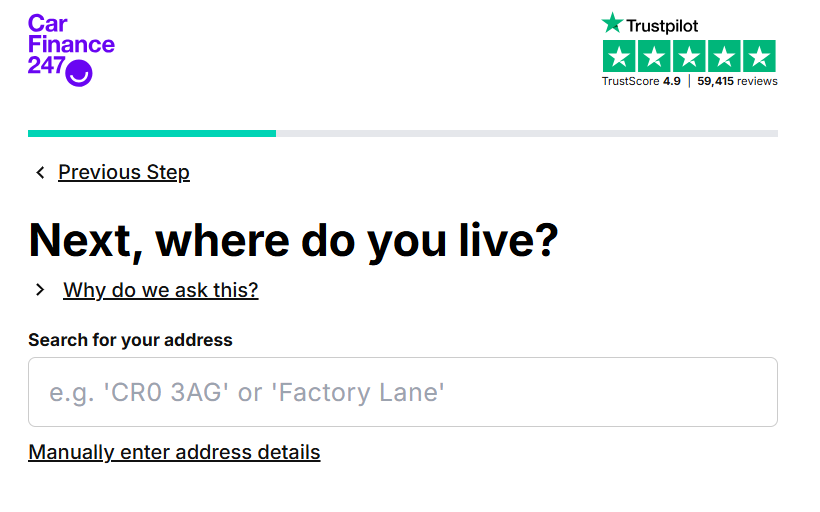
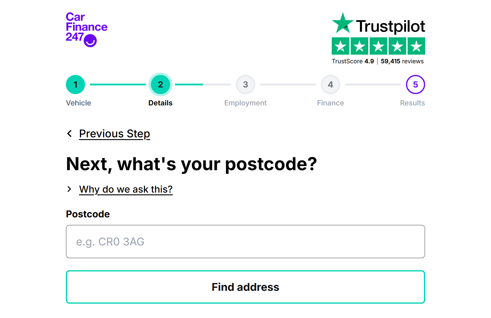
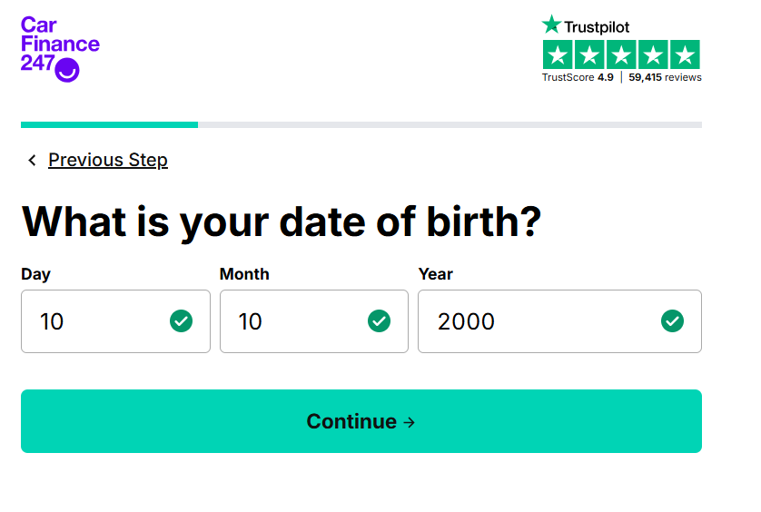
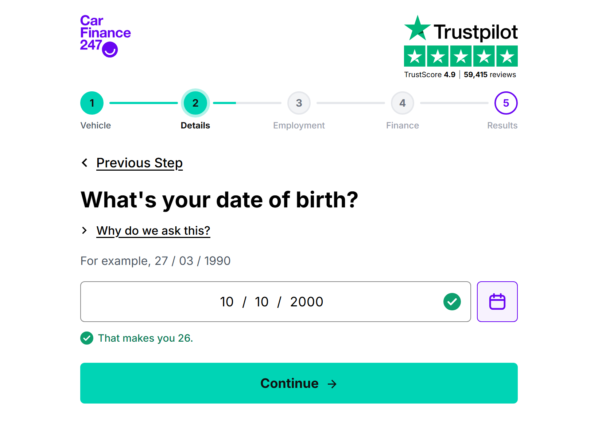
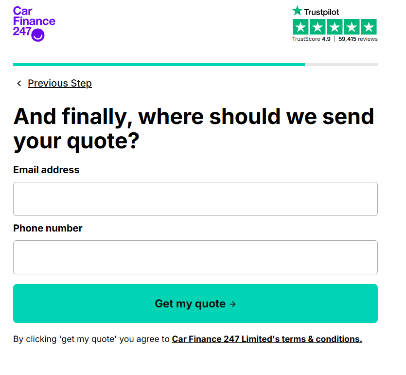
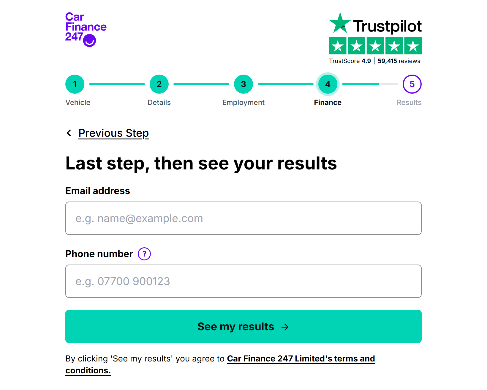

The three steps as they are today, next to the redesign. Each pair shows the same state of the page.
Starting state of the step.


The single 'address or street name' box is now a postcode-first search, 'See more addresses' is one scrollable list, and a clear 'Can't see your address?' button replaces the small manual link. After choosing, 'Is this your address?' confirms it and Change opens the form with the address filled in. Each of these is a separate switch so it can be A/B tested alone.
There is less to decide before the first tap, no repeated clicking to find an address deep in the list, and no dead end for people whose address is not listed.
A valid date has been entered.


Three separate boxes are now one box that adds the slashes for you, with a calendar that goes year, then month, then day as a second way in. Tapping the day finishes it.
It is faster and less fiddly on a phone, and typing mistakes are caught straight away. A collapsed 'Why do we ask this?' line under the heading answers the doubt behind the leaving.
Starting state of the final page.


The headline now promises results instead of a quote sent later, and a small '?' next to the phone number explains on hover or tap why it is needed. The phone field accepts numbers the way people type them.
People worried about unwanted calls get an answer at the moment they hesitate, without a box adding to the page. Fewer people should drop out of a page where everything else is already filled in.
The 'current' images are the screenshots supplied for this project, so they are desktop width. The redesign is shown at the same width for a fair comparison.